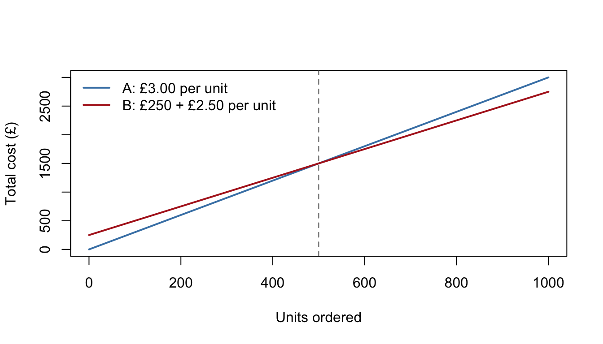

4 Coordinate Geometry Useful for Modelling
Straight lines are the workhorses of quantitative management: cost structures, simple demand curves, tariffs, depreciation and first-pass forecasts are all linear models. This chapter is short but important — it makes sure you can write down the equation of a line from any starting information, read gradients as rates of change with units, and interpret a fitted line in business language.
Why this matters: The first model anyone fits to data is a straight line. At university this becomes linear regression — the single most-used tool in business analytics — and everything you learn there rests on being able to say, instantly, what a gradient and an intercept mean in context.
4.1 Straight lines and their equations
4.1.1 Key idea
A straight line can be written in three interchangeable forms:
- Gradient–intercept form: \(y = mx + c\), where \(m\) is the gradient and \(c\) the \(y\)-intercept.
- Point–gradient form: \(y - y_1 = m(x - x_1)\), ideal when you know the gradient and one point.
- General form: \(ax + by + c = 0\), tidy for lines of any orientation (including vertical).
The gradient between two points is
\[m = \frac{y_2 - y_1}{x_2 - x_1} = \frac{\text{change in } y}{\text{change in } x}.\]
4.1.2 Worked examples
Example (simple). Write down the equation of the line with gradient 3 and \(y\)-intercept \(-2\).
Straight into gradient–intercept form: \(y = 3x - 2\).
Example (moderate). Find the equation of the line through \((2, 5)\) and \((6, 17)\), giving your answer in the form \(ax + by + c = 0\).
Gradient: \(m = \dfrac{17 - 5}{6 - 2} = 3\). Point–gradient form through \((2,5)\):
\[y - 5 = 3(x - 2) \;\Rightarrow\; y = 3x - 1 \;\Rightarrow\; 3x - y - 1 = 0.\]
Example (challenging — reverse-engineering a price list). A printing company charges £190 for 500 flyers and £340 for 1{,}250 flyers. Assuming the pricing is linear, find the charge \(C\) as a function of the number of flyers \(q\), interpret the two parameters, and predict the cost of 2{,}000 flyers.
Gradient:
\[m = \frac{340 - 190}{1250 - 500} = \frac{150}{750} = 0.2 \text{ (£ per flyer)}.\]
Point–gradient form through \((500, 190)\):
\[C - 190 = 0.2(q - 500) \;\Rightarrow\; C(q) = 0.2q + 90.\]
Interpretation: a £90 fixed set-up fee, plus 20p per flyer. Prediction: \(C(2000) = £490\). We've recovered the firm's whole tariff from just two prices — this "two points determine the line" trick is used constantly.
4.1.3 Practice exercises
- Find the equation of the line with gradient \(-2\) through \((3, 4)\).
- Find the equation of the line through \((1, 7)\) and \((4, 1)\), giving your answer in the form \(ax + by + c = 0\).
- A taxi journey of 2 miles costs £7.50 and a journey of 5 miles costs £15. Assuming a linear tariff, find the fare \(F\) as a function of miles \(x\), interpret both parameters, and find the fare for 8 miles.
Common mistakes: - Keep the subtraction order consistent in the gradient formula: \(\dfrac{y_2 - y_1}{x_2 - x_1}\), never mixing \(\dfrac{y_2 - y_1}{x_1 - x_2}\). - In point–gradient form the signs flip: through \((2, 5)\) the bracket is \((x - 2)\), not \((x + 2)\). - Check your final equation by substituting both original points back in — ten seconds, catches almost everything.
Self-check: straight lines and their equations
Q1. A line has gradient \(4\) and passes through \((1, 6)\). Written as \(y = 4x + c\), the intercept is \(c =\)
Q2. The line through \((2, 3)\) and \((5, 12)\), written as \(y = mx + c\), has \(m =\) and \(c =\)
Q3. Which of the following is the equation of the line through \((-1, 4)\) with gradient \(-2\), in the form \(ax + by + c = 0\)?
- \(2x + y - 6 = 0\)
- \(2x + y - 2 = 0\)
- \(2x - y + 6 = 0\)
- \(x + 2y - 7 = 0\)
Answer:
Q4. Which of the following is \(y = \dfrac{3}{4}x + 2\) rewritten in general form?
- \(3x - 4y + 2 = 0\)
- \(3x + 4y + 8 = 0\)
- \(3x - 4y + 8 = 0\)
- \(4x - 3y + 8 = 0\)
Answer:
Q5. A courier charges £11 to deliver a 3 kg parcel and £19 to deliver a 7 kg parcel. Assuming a linear tariff, the cost per extra kilogram (in £) is and the fixed charge (in £) is
Q1. \(c = 2\). Substitute the point: \(6 = 4(1) + c\), so \(c = 2\). Quick check: \(y = 4x + 2\) does pass through \((1, 6)\).
Q2. \(m = 3\), \(c = -3\). Gradient \(m = \dfrac{12 - 3}{5 - 2} = 3\); then \(c = 3 - 3 \times 2 = -3\). Verify with the other point: \(3 \times 5 - 3 = 12\). ✓ The trap is mixing subtraction orders in the gradient formula — keep both differences in the same direction.
Q3. (B). Point–gradient form: \(y - 4 = -2(x + 1)\), so \(y = -2x + 2\), i.e. \(2x + y - 2 = 0\). Check: \(2(-1) + 4 - 2 = 0\). ✓ Option (A) comes from the classic sign flip — writing the bracket as \((x - 1)\) even though the point has \(x = -1\); the bracket must be \((x - (-1)) = (x + 1)\).
Q4. (C). Multiply through by 4: \(4y = 3x + 8\), so \(3x - 4y + 8 = 0\). Option (A) is the tempting one: multiplying the \(x\)-term by 4 but forgetting to do the same to the constant \(2\).
Q5. £2 per kg, £5 fixed. Gradient \(= \dfrac{19 - 11}{7 - 3} = 2\); intercept \(= 11 - 2 \times 3 = 5\). Check with the second parcel: \(2 \times 7 + 5 = 19\). ✓ This is the flyer-pricing example in miniature: two prices pin down the whole tariff.
4.2 Gradient as a rate of change
4.2.1 Key idea
The gradient is not just a number — it is a rate of change, and it always carries units:
\[m = \frac{\text{change in } y}{\text{change in } x} \quad \text{measured in } \frac{\text{units of } y}{\text{units of } x}.\]
If cost (£) is plotted against output (units), the gradient is in pounds per unit: the extra cost of one more unit. Getting into the habit of saying gradients aloud with their units ("£5 per extra unit", "−250 sales per month") turns algebra into business insight.
4.2.2 Worked examples
Example (simple). Find the gradient of the line joining \((2, 10)\) and \((7, 30)\).
\(m = \dfrac{30 - 10}{7 - 2} = 4\).
Example (moderate). A factory's total weekly cost is £1{,}200 when it produces 100 units and £2{,}200 when it produces 300 units. Assuming a linear cost function, find and interpret the gradient and the intercept.
Gradient: \(m = \dfrac{2200 - 1200}{300 - 100} = \dfrac{1000}{200} = 5\) — each extra unit costs £5 to make (the variable cost per unit).
Intercept: \(c = 1200 - 5 \times 100 = 700\) — the firm pays £700 per week even at zero output (the fixed cost). So \(C(q) = 5q + 700\).
Example (challenging — a declining trend). A product's monthly sales revenue was £8{,}000 in January (\(t = 0\)) and £6{,}500 six months later. Assuming a linear trend, find the model, state the rate of decline, predict when revenue reaches £5{,}000, and criticise the prediction.
Gradient: \(m = \dfrac{6500 - 8000}{6} = -250\) £ per month. Model: \(R(t) = 8000 - 250t\).
Revenue reaches £5{,}000 when \(8000 - 250t = 5000\), i.e. \(t = 12\) months. But that prediction extrapolates twice as far as the data reaches — the trend may flatten (loyal customers remain) or steepen (a rival launches). Report the number and the caveat; taken literally, the model even predicts negative revenue at \(t = 32\), which is a sign of its limits, not of impending doom.
4.2.3 Practice exercises
- Find the gradient of the line through \((3, 5)\) and \((8, 25)\).
- A water tank holds 500 litres at \(t = 0\) and 380 litres after 8 minutes of steady draining. Find the rate of change (with units) and predict when the tank is empty.
- A firm's cost function is \(C(q) = 3.5q + 400\) (in £). Interpret the numbers \(3.5\) and \(400\) in one sentence each.
Common mistakes: - Quoting a gradient without units. "The gradient is 5" means little; "£5 per extra unit" is a finding. - Sign slips with decreasing quantities: falling from 8000 to 6500 is a change of \(-1500\), so the gradient is negative.
Why this matters: "Rate of change" is the idea that becomes the derivative in Chapter 7, and "cost of one more unit" is exactly what economists call marginal cost. Straight lines are the special case where the rate of change is constant; calculus handles the general case. Master the units habit now and marginal analysis will feel natural later.
4.3 Parallel and perpendicular lines
4.3.1 Key idea
- Parallel lines have equal gradients: \(m_1 = m_2\).
- Perpendicular lines have gradients that multiply to \(-1\): \(m_1 m_2 = -1\), i.e. \(m_2 = -\dfrac{1}{m_1}\) (each gradient is the negative reciprocal of the other).
4.3.2 Worked examples
Example (simple). Find the line parallel to \(y = 2x - 3\) passing through \((1, 5)\).
Same gradient, \(m = 2\): \(y - 5 = 2(x - 1)\), so \(y = 2x + 3\).
Example (moderate). Find the line perpendicular to \(y = -\tfrac{1}{3}x + 2\) passing through \((2, -1)\).
Negative reciprocal of \(-\tfrac13\) is \(3\): \(y + 1 = 3(x - 2)\), so \(y = 3x - 7\).
Example (challenging — iso-profit lines). A workshop makes \(x\) tables and \(y\) chairs per week, earning profit \(P = 5x + 3y\) (in £0s). For any fixed profit level \(k\), the combinations giving exactly that profit satisfy \(5x + 3y = k\).
Show that all these iso-profit lines are parallel. (b) The workshop's capacity allows the production plans \((0, 10)\), \((6, 4)\) and \((9, 0)\). Which is most profitable?
Rearranging, \(y = -\tfrac{5}{3}x + \tfrac{k}{3}\): every iso-profit line has gradient \(-\tfrac53\), whatever the value of \(k\). Changing \(k\) just slides the line — higher profit, further from the origin.
\(P(0,10) = 30\), \(P(6,4) = 42\), \(P(9,0) = 45\): make 9 tables. Geometrically, we slid the iso-profit line outwards until it last touched a feasible plan — and it left the feasible set at \((9, 0)\).
This picture — a family of parallel lines sweeping across a feasible region — is the entire geometry of linear programming, one of the first big techniques you'll meet in Management Science.
Desmos activity: Insert an interactive graph of the family \(5x + 3y = k\) with a slider for \(k\), over a shaded feasible region, so students can slide the iso-profit line and watch where it last touches the region.
4.3.3 Practice exercises
- Find the line parallel to \(y = -x + 4\) through \((5, 1)\).
- Find the line perpendicular to \(2x + y - 3 = 0\) passing through the origin.
- Show that the lines \(3x - 2y + 4 = 0\) and \(6x - 4y - 7 = 0\) are parallel.
Common mistakes: - Perpendicular gradients are negative reciprocals, not just negatives: perpendicular to \(m = 2\) is \(m = -\tfrac12\), not \(-2\). - Before comparing gradients, rearrange general-form equations into \(y = mx + c\) — you can't read the gradient of \(3x - 2y + 4 = 0\) at a glance. - Horizontal (\(m = 0\)) and vertical lines are perpendicular even though the product rule \(m_1m_2 = -1\) can't be applied (a vertical line has no finite gradient).
Self-check: parallel and perpendicular lines
Q1. The lines \(y = 3x - 1\) and \(6x - 2y + 5 = 0\) are
Q2. The lines \(y = 2x + 1\) and \(y = -2x + 3\) are
Q3. A line is perpendicular to \(y = -\dfrac{1}{4}x + 7\). Its gradient is
Q4. Which of the following is the line perpendicular to \(2x + y - 3 = 0\) passing through \((4, 1)\)?
- \(y = \dfrac{1}{2}x - 1\)
- \(y = -2x + 9\)
- \(y = 2x - 7\)
- \(y = -\dfrac{1}{2}x + 3\)
Answer:
Q5. Which pair of lines is perpendicular?
- \(y = 5x - 2\) and \(y = 5x + 1\)
- \(x + 3y - 6 = 0\) and \(y = 3x + 4\)
- \(y = -2x + 1\) and \(y = 2x - 5\)
- \(2x - y + 1 = 0\) and \(y = \dfrac{1}{2}x\)
Answer:
Q1. Parallel. Rearrange the second line: \(2y = 6x + 5\), so \(y = 3x + \tfrac52\). Both gradients are \(3\). You can't compare gradients until both equations are in \(y = mx + c\) form.
Q2. Neither. The gradients multiply to \(2 \times (-2) = -4\), not \(-1\). This is the "just negate it" trap: perpendicular gradients are negative reciprocals, so the perpendicular partner of \(2\) is \(-\tfrac12\), not \(-2\).
Q3. \(4\). The negative reciprocal of \(-\tfrac14\) is \(-\dfrac{1}{-1/4} = 4\) — flip and change sign, and here the two sign changes cancel to give a positive answer.
Q4. (A). The given line rearranges to \(y = -2x + 3\), gradient \(-2\); the perpendicular gradient is \(\tfrac12\). Through \((4, 1)\): \(y - 1 = \tfrac12(x - 4)\), so \(y = \tfrac12 x - 1\). Beware: options (B), (C) and (D) all pass through \((4, 1)\), so substituting the point can't decide this one — only the gradient can. (B) is the parallel line, (C) forgot the reciprocal, (D) forgot the sign change.
Q5. (B). First line: \(y = -\tfrac13 x + 2\), gradient \(-\tfrac13\); second has gradient \(3\); product \(= -1\). ✓ (A) is a parallel pair, (C) is the "negatives but not reciprocals" trap (\(-4 \ne -1\)), and (D) is the "reciprocals but not negatives" trap (\(2 \times \tfrac12 = +1\)).
4.4 Linear models
4.4.1 Key idea
A linear model \(y = mx + c\) says: start at \(c\), then change at a steady rate \(m\). Fitting one from two data points is a two-step routine — gradient first, then intercept — and interpreting one is a two-sentence routine:
- the intercept \(c\) is the value of \(y\) when \(x = 0\) (fixed cost, starting value, base level) — if \(x = 0\) makes sense in context;
- the gradient \(m\) is the change in \(y\) per one-unit change in \(x\) (cost per unit, sales lost per pound of price, depreciation per year).
Predictions within the range of the data (interpolation) are usually safe; predictions far beyond it (extrapolation) deserve a health warning.

Figure 4.1: Two supplier tariffs: the fixed-fee supplier becomes cheaper beyond the crossover volume.
4.4.2 Worked examples
Example (simple). A delivery van's value is modelled by \(V(t) = 12000 - 1500t\) (£, after \(t\) years). Interpret both parameters.
The van was bought for £12{,}000 (the intercept) and loses £1{,}500 of value each year (the gradient, negative because value falls).
Example (moderate). At a price of £4 a shop sells 220 units a week; at £6 it sells 160. Fit a linear demand model \(q(p)\), predict sales at £7, and state a sensible domain.
Gradient: \(m = \dfrac{160 - 220}{6 - 4} = -30\) units per £. Through \((4, 220)\):
\[q(p) = 220 - 30(p - 4) = 340 - 30p.\]
At £7: \(q = 130\) units. Sensible domain: prices where predicted sales are non-negative, \(0 \le p \le \tfrac{340}{30} \approx £11.33\) — beyond that the model breaks down.
Example (challenging — choosing between tariffs). Supplier A charges £3.00 per unit with no other fees. Supplier B charges a £250 fixed fee plus £2.50 per unit. Which supplier should a firm use?
The cost lines are \(C_A(u) = 3u\) and \(C_B(u) = 2.5u + 250\). They intersect where
\[3u = 2.5u + 250 \;\Rightarrow\; 0.5u = 250 \;\Rightarrow\; u = 500.\]
Below 500 units, A is cheaper (no fixed fee to recover); above 500, B's lower per-unit rate wins; at exactly 500 they tie (both £1{,}500). The answer isn't a supplier — it's a decision rule based on expected volume. Notice the structure: B has the higher intercept but the shallower gradient, so the lines must cross exactly once.
4.4.3 Practice exercises
- A demand model is \(q = 500 - 40p\). Interpret both parameters and state the range of prices for which the model makes sense.
- Deliveries of 5 km take 22 minutes and deliveries of 15 km take 46 minutes. Fit a linear model for delivery time, and suggest what the intercept represents physically.
- Plan A charges 8p per unit of data; Plan B charges £12 per month plus 5p per unit. Find the monthly usage at which the plans cost the same, and state which plan suits a heavy user.
Common mistakes: - Interpreting the intercept when \(x = 0\) is meaningless (a "delivery of 0 km" may not exist as a service — the intercept is then a modelling artefact, e.g. fixed handling time, and should be described as such). - Extrapolating far beyond the data and reporting the result without a caveat. - Expecting real data to lie exactly on a line. Two points always fit perfectly; twenty won't. At university you'll fit the best line through a cloud of points — that's regression, and it starts exactly here.
Desmos activity: Insert an interactive scatter plot of noisy cost–output data with a movable line, letting students adjust gradient and intercept to "fit by eye" before formal regression is introduced at university.
Why this matters: Fixed-plus-variable cost structures, tariff comparisons, straight-line depreciation and first-pass demand curves are bread-and-butter models in accounting, economics and operations. And every regression output you will ever read reports exactly two headline numbers per variable: an intercept and a gradient. You now know how to read them.
4.5 Chapter summary
You should now be able to:
- write the equation of a line in gradient–intercept, point–gradient and general form, from any sensible starting information;
- compute gradients from two points and interpret them as rates of change with units;
- find lines parallel or perpendicular to a given line, and recognise iso-profit lines as a family of parallels;
- fit a linear model from two data points, interpret the gradient and intercept in context, and know when interpolation is safe and extrapolation is not.
These skills feed directly into Chapter 7, where the gradient of a curve at a point is defined via the straight-line gradients you've just practised.
This diagnostic is a compass, not a verdict — use it to find out which sections to revisit, not to judge yourself.
4.6 End of chapter quiz
Q1. The gradient of the line through \((2, 9)\) and \((6, 1)\) is
Q2. Which of the following is the equation of the line with gradient \(5\) through \((-2, 3)\)?
- \(y = 5x - 7\)
- \(y = 5x + 13\)
- \(y = 5x + 3\)
- \(y = 5x - 17\)
Answer:
Q3. A machine's annual maintenance cost is £900 in year 2 and £1{,}500 in year 6. Assuming a linear trend, the cost rises by £ per year. The units of this gradient are
Q4. A tank holds 400 litres at \(t = 0\) and 250 litres after 10 minutes of steady draining. The rate of change of volume, in litres per minute, is and the tank is empty (to 2 d.p.) at \(t =\) minutes.
Q5. In the weekly cost function \(C(q) = 4q + 250\) (in £), the number \(250\) represents
Q6. The lines \(4x - 2y + 1 = 0\) and \(y = 2x - 5\) are
Q7. The gradient of any line perpendicular to \(y = \dfrac{2}{5}x + 1\) is
Q8. A demand model is \(q = 420 - 30p\). The model predicts zero demand at the price \(p =\) £
Q9. Plan A charges £0.10 per unit with no other fees. Plan B charges £18 per month plus £0.04 per unit. The plans cost the same at a monthly usage of units, so a heavy user should choose
Q10. The trend \(R(t) = 9000 - 400t\) was fitted from monthly data covering \(t = 0\) to \(t = 6\). Which prediction deserves the most caution?
- revenue at \(t = 3\)
- revenue at \(t = 5\)
- revenue at \(t = 20\)
- revenue at \(t = 6\)
Answer:
Q1. \(-2\). \(m = \dfrac{1 - 9}{6 - 2} = \dfrac{-8}{4} = -2\). The trap is mixing subtraction orders and getting \(+2\); falling \(y\)-values mean a negative gradient. Shaky? Revisit Section 4.1.
Q2. (B). \(y - 3 = 5(x + 2)\) gives \(y = 5x + 13\); check \(5(-2) + 13 = 3\). ✓ Option (A) is the bracket sign flip \((x - 2)\); (C) mistakes the point's \(y\)-value for the intercept; (D) swaps the point's coordinates. Shaky? Revisit Section 4.1.
Q3. £150 per year: \(\dfrac{1500 - 900}{6 - 2} = 150\). A gradient always carries the units of \(y\) over the units of \(x\) — quoting "150" alone is only half an answer. Shaky? Revisit Section 4.2.
Q4. \(-15\) litres per minute, since \(\dfrac{250 - 400}{10} = -15\); the tank empties when \(400 - 15t = 0\), i.e. \(t = \dfrac{400}{15} \approx 26.67\) minutes. Don't drop the minus sign just because the answer "feels like" a speed of draining. Shaky? Revisit Section 4.2.
Q5. The fixed cost at zero output — what the firm pays before producing anything. The cost of one extra unit is the gradient, £4, not the intercept. Shaky? Revisit Section 4.2.
Q6. Parallel. Rearranging: \(4x - 2y + 1 = 0\) gives \(y = 2x + \tfrac12\) — the same gradient as \(y = 2x - 5\). Rearrange before comparing; you can't read the gradient of a general-form equation at a glance. Shaky? Revisit Section 4.3.
Q7. \(-2.5\). The negative reciprocal of \(\tfrac25\) is \(-\tfrac52\). Flip and negate: \(-\tfrac25\) (negate only) and \(\tfrac52\) (flip only) are the two classic wrong turns. Shaky? Revisit Section 4.3.
Q8. £14, from \(420 - 30p = 0\). This is also the top of the model's sensible domain: beyond £14 the model predicts negative sales, a limitation rather than a forecast. Shaky? Revisit Section 4.4.
Q9. \(0.10u = 18 + 0.04u\) gives \(0.06u = 18\), so \(u = 300\) units (both plans then cost £30). Above 300 units, B's shallower gradient wins despite its higher intercept — the fixed-fee plan suits the heavy user. Shaky? Revisit Section 4.4.
Q10. (C). Times \(t = 3\), \(5\) and \(6\) sit within the fitted range (interpolation); \(t = 20\) extrapolates more than three times beyond the data — taken literally the model soon predicts negative revenue, a sign of its limits. Shaky? Revisit Section 4.4.
Rule of thumb: if two or three questions from the same section went wrong, rework that section before starting Chapter 7 — its whole opening idea is built on gradients.
4.7 Answers to practice exercises
Straight lines: 1. \(y = -2x + 10\). 2. \(m = -2\); \(y = -2x + 9\), i.e. \(2x + y - 9 = 0\). 3. \(F(x) = 2.5x + 2.5\): a £2.50 flag fall plus £2.50 per mile; 8 miles costs £22.50.
Gradient as rate of change: 1. \(m = 4\). 2. \(-15\) litres per minute; empty at \(t = \tfrac{500}{15} \approx 33\) minutes. 3. Each extra unit adds £3.50 to total cost (variable cost per unit); the firm pays £400 even at zero output (fixed cost).
Parallel and perpendicular: 1. \(y = -x + 6\). 2. The given line has gradient \(-2\), so the perpendicular has gradient \(\tfrac12\): \(y = \tfrac{x}{2}\). 3. Both rearrange to gradient \(\tfrac32\) (\(y = \tfrac32 x + 2\) and \(y = \tfrac32 x - \tfrac74\)), so they are parallel (and distinct).
Linear models: 1. 500 is the quantity demanded at price zero (the market's saturation level); each £1 price rise loses 40 sales; sensible for \(0 \le p \le 12.5\). 2. \(m = 2.4\) minutes per km, intercept \(10\) minutes: \(T(d) = 2.4d + 10\); the intercept is fixed handling/loading time per delivery. 3. \(0.08u = 12 + 0.05u\) gives \(u = 400\) units; beyond 400 units per month Plan B is cheaper, so it suits a heavy user.